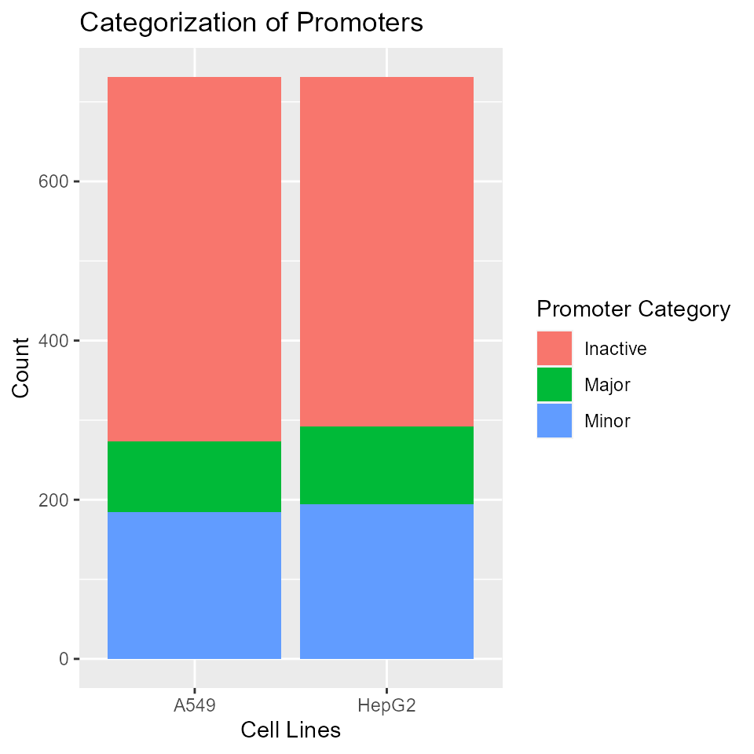
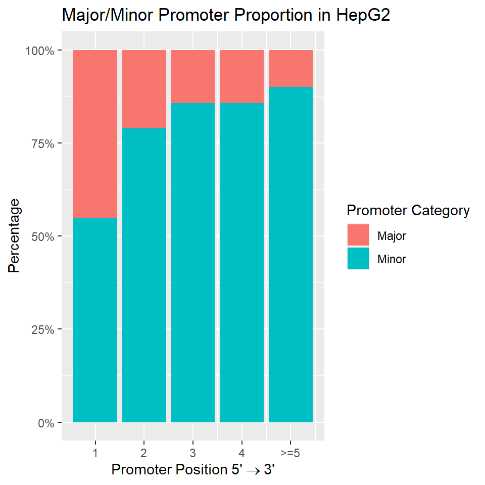
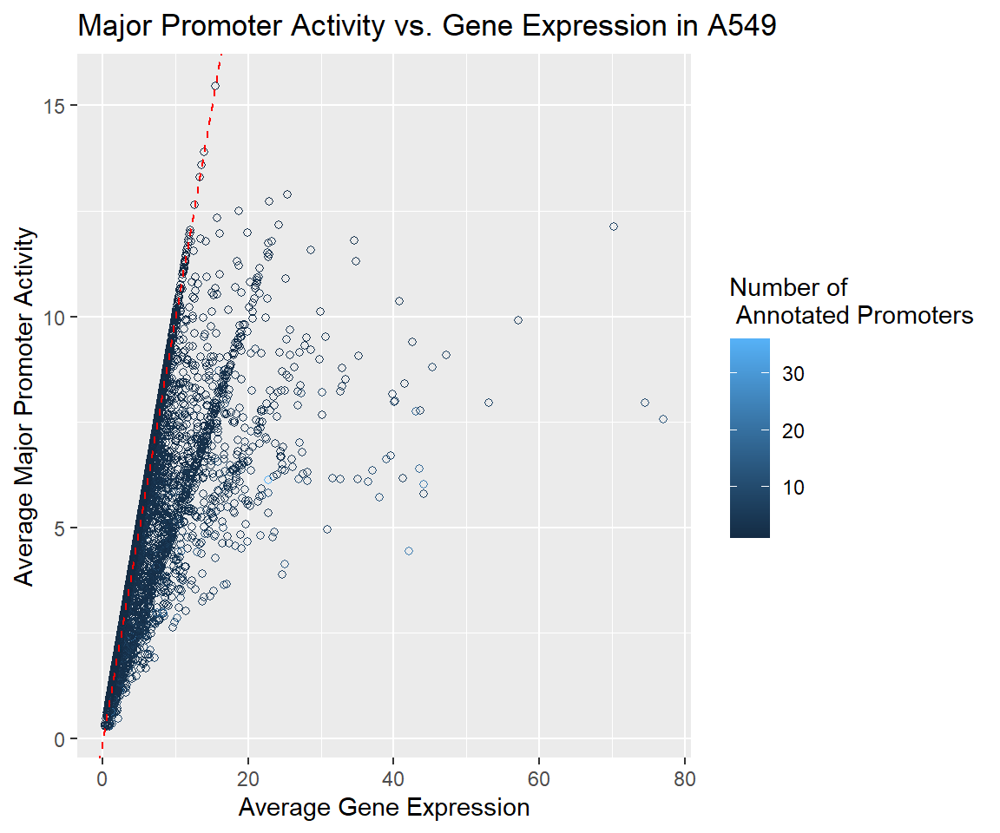

Identifying Active and Alternative Promoters from RNA-Seq data with proActiv
Joseph Lee, Deniz Demircioğlu, Jonathan Göke
Source:vignettes/proActiv.Rmd
proActiv.RmdSummary
Most human genes have multiple promoters that control the expression of distinct isoforms. The use of these alternative promoters enables the regulation of isoform expression pre-transcriptionally. Alternative promoters have been found to be important in a wide number of cell types and diseases.
proActiv is a method that enables the analysis of promoters from RNA-Seq data. proActiv uses aligned reads as input, and then generates counts and normalized promoter activity estimates for each annotated promoter. These estimates can then be used to identify which promoter is active, which promoter is inactive, and which promoters change their activity across conditions.
Here we present a quick start guide to using proActiv, and a detailed workflow for identifying active promoters and alternative promoters across 2 conditions.
If you use proActiv in your research, please cite:
Contents
Quick Start: Quantifying promoter activity with proActiv
proActiv estimates promoter activity from RNA-Seq data. Promoter activity is defined as the total amount of transcription initiated at each promoter. proActiv takes as input either BAM files or junction files (TopHat2 or STAR), and a promoter annotation object of the relevant genome. An optional argument condition can be supplied, describing the condition corresponding to each input file. Here we demonstrate proActiv with STAR junction files (Human genome GRCh38 Gencode v34) as input:
library(proActiv) ## List of STAR junction files as input files <- list.files(system.file('extdata/vignette/junctions', package = 'proActiv'), full.names = TRUE) ## Vector describing experimental condition condition <- rep(c('A549','HepG2'), each=3) ## Promoter annotation for human genome GENCODE v34 promoterAnnotation <- promoterAnnotation.gencode.v34 result <- proActiv(files = files, promoterAnnotation = promoterAnnotation, condition = condition)
result is a summarizedExperiment object which can be accessed as follows:
-
assays(results)returns raw/normalized promoter counts and absolute/relative promoter activity
-
metadata(results)returns gene expression data
-
rowData(results)returns promoter metadata and summarized absolute promoter activity by conditions
A complete workflow to identify alternative promoter usage
Here we present a complete step-by-step workflow for analysing promoter activity with proActiv and for identifying alternative promoter usage across samples from different conditions. We will compare samples from 2 different cell lines (A549 and HepG2) to identify alternative promoters.
Preparing input data
proActiv uses RNA-Seq data to quantify promoter activity. Users have the option of using as input either BAM files, or tab-delimited junction files that are generated when TopHat2 or STAR is used for read alignment.
Below, we demonstrate running proActiv with input STAR junction files. This data is taken from the SGNEx project. The reference genome used for alignment is Gencode v34 (GRCh38). These files can be found in ‘extdata/vignette/junctions’:
- extdata/vignette/junctions/SGNEx_A549_Illumina_replicate1-run1.junctions.gz
- extdata/vignette/junctions/SGNEx_A549_Illumina_replicate3-run1.junctions.gz
- extdata/vignette/junctions/SGNEx_A549_Illumina_replicate5-run1.junctions.gz
- extdata/vignette/junctions/SGNEx_HepG2_Illumina_replicate2-run1.junctions.gz
- extdata/vignette/junctions/SGNEx_HepG2_Illumina_replicate4-run1.junctions.gz
- extdata/vignette/junctions/SGNEx_HepG2_Illumina_replicate5-run1.junctions.gz
files <- list.files(system.file('extdata/vignette/junctions', package = 'proActiv'), full.names = TRUE)
Preparing promoter annotations
In order to quantify promoter activity, proActiv uses a set of promoters based on genome annotations. proActiv allows the creation of a promoter annotation object for any genome from a TxDb object or from a GTF file with the preparePromoterAnnotation function. Users have the option to either pass the file path of the GTF/GFF or TxDb to be used, or use the TxDb object directly as input. proActiv includes pre-calculated promoter annotations for human and mouse genomes:
- GENCODE Release 19 / GRCh37 / hg19 :
promoterAnnotation.gencode.v19 - GENCODE Release 34 / GRCh38 / hg38 :
promoterAnnotation.gencode.v34 - GENCODE Release M1 / NCBIM37 / mm9 :
promoterAnnotation.gencode.vM1 - GENCODE Release M25 / GRCm38.p6 / mm10 :
promoterAnnotation.gencode.vM25
GTF files can be downloaded from the GENCODE page.
Here, we demonstrate creating the promoter annotation for the Human genome (GENCODE v34) with both GTF and TxDb. To keep the run-time of this vignette small, we use a subset of the GTF/TxDb which includes only chromosome 22 annotations.
## From GTF file path gtf.file <- system.file('extdata/vignette/annotation/gencode.v34.annotation.chr22.gtf.gz', package = 'proActiv') promoterAnnotation.gencode.v34.chr22 <- preparePromoterAnnotation(file = gtf.file, species = 'Homo_sapiens') ## From TxDb object txdb.file <- system.file('extdata/vignette/annotation/gencode.v34.annotation.chr22.sqlite', package = 'proActiv') txdb <- loadDb(txdb.file) promoterAnnotation.gencode.v34.chr22 <- preparePromoterAnnotation(txdb = txdb, species = 'Homo_sapiens')
The PromoterAnnotation object has 3 slots:
-
intronRanges: Intron ranges, giving the corresponding transcripts of each intron -
promoterIdMapping: An ID mapping between transcripts, promoter IDs and gene IDs
-
promoterCoordinates: Promoter coordinates (TSS) and internal promoter state, along with the 3’ coordinate of the first exon
Running proActiv
Once promoters in the genome are identified, proActiv estimates promoter activity at each annotated promoter. Here, we load pre-calculated promoter annotation for GENCODE Release 34. We also supply the experimental condition to proActiv. This information allows proActiv to summarize results across conditions.
promoterAnnotation <- promoterAnnotation.gencode.v34 condition <- rep(c('A549', 'HepG2'), each=3) result <- proActiv(files = files, promoterAnnotation = promoterAnnotation, condition = condition)
result is a SummarizedExperiment object with assays as raw/normalized promoter counts, and absolute/relative promoter activity:
show(result) #> class: SummarizedExperiment #> dim: 122635 6 #> metadata(1): geneExpression #> assays(4): promoterCounts normalizedPromoterCounts #> absolutePromoterActivity relativePromoterActivity #> rownames(122635): 1 2 ... 122634 122635 #> rowData names(12): promoterId geneId ... A549.class HepG2.class #> colnames(6): SGNEx_A549_Illumina_replicate1.run1 #> SGNEx_A549_Illumina_replicate3.run1 ... #> SGNEx_HepG2_Illumina_replicate4.run1 #> SGNEx_HepG2_Illumina_replicate5.run1 #> colData names(2): sampleName condition
The rowData slot stores a promoter-gene ID mapping and promoter position (5’ to 3’) for each promoter by gene. Mean absolute promoter activity for each condition is also summarized here. Promoters are also categorized into three classes. Promoters with activity < 0.25 are classified as inactive, while the most active promoters of each gene are classified as major promoters. Promoters active at lower levels are classified as minor promoters.
| promoterId | geneId | seqnames | start | strand | internalPromoter | promoterPosition | txId | A549.mean | HepG2.mean | A549.class | HepG2.class |
|---|---|---|---|---|---|---|---|---|---|---|---|
| 1 | ENSG00000000003.15 | chrX | 100637104 | - | TRUE | 2 | ENST0000…. | 7.232193 | 8.374666 | NA | NA |
| 2 | ENSG00000000003.15 | chrX | 100639991 | - | FALSE | 1 | ENST0000…. | 0.000000 | 0.000000 | Inactive | Inactive |
| 3 | ENSG00000000005.6 | chrX | 100584936 | + | FALSE | 1 | ENST0000…. | 0.000000 | 0.000000 | Inactive | Inactive |
| 4 | ENSG00000000005.6 | chrX | 100593624 | + | TRUE | 2 | ENST0000…. | 0.000000 | 0.000000 | NA | NA |
| 5 | ENSG00000000419.12 | chr20 | 50945861 | - | TRUE | 2 | ENST0000…. | 8.760939 | 10.023193 | NA | NA |
| 6 | ENSG00000000419.12 | chr20 | 50958555 | - | FALSE | 1 | ENST0000…. | 8.426331 | 9.642849 | Minor | Minor |
The metadata slot provides gene expression data for each replicate per condition, and also summarizes mean expression across conditions.
For cleaner downstream analysis, one can remove single-exon transcripts for which promoter activity is not quantified. result can be filtered as such:
## Removes single-exon transcripts / promoters by eliminating promoter counts that are NA result <- result[complete.cases(assays(result)$promoterCounts),]
Alternative promoter usage
We identify genes with similar expression levels across cell lines with alternate promoter usage using DEXSeq (Anders, Reyes, Huber 2012). While DEXSeq is originally intended for inferring differential exon usage in RNA-Seq data, DEXSeq can be similarly used with raw promoter counts as input to assess the statistical significance of alternative promoter usage across conditions. We follow the standard DEXSeq workflow. To keep the run-time of this vignette short, we focus only on annotated promoters from chromosome 1.
library(DEXSeq) ## Subset to chromosome 1 result.chr <- result[rowData(result)$seqnames == 'chr1', ] countData <- data.frame(assays(result.chr)$promoterCounts, rowData(result.chr)) ## Call DEXSeq - promoter as feature, gene as group dxd <- DEXSeqDataSet(countData = as.matrix(countData[,seq_len(length(condition))]), sampleData = data.frame(colData(result.chr)), design = formula(~ sample + exon + condition:exon), featureID = as.factor(countData$promoterId), groupID = as.factor(countData$geneId)) dxr1 <- DEXSeq(dxd)
DEXSeq returns dxr1, which provides the significance that a promoter is differentially used across conditions. The description of each column of dxr1 can be found in the metadata columns.
mcols(dxr1)$description #> [1] "group/gene identifier" #> [2] "feature/exon identifier" #> [3] "mean of the counts across samples in each feature/exon" #> [4] "exon dispersion estimate" #> [5] "LRT statistic: full vs reduced" #> [6] "LRT p-value: full vs reduced" #> [7] "BH adjusted p-values" #> [8] "exon usage coefficient" #> [9] "exon usage coefficient" #> [10] "relative exon usage fold change" #> [11] "GRanges object of the coordinates of the exon/feature" #> [12] "matrix of integer counts, of each column containing a sample"
Users can sort this result by the minimum adjusted p-value for all promoters belonging to a particular gene. This helps to better identify candidate genes where alternative promoter usage is present.
## Arrange by minimum padj for each gene dxr1 <- data.frame(dxr1[,1:10]) %>% group_by(groupID) %>% mutate(minp = min(padj)) %>% arrange(minp)
| groupID | featureID | exonBaseMean | dispersion | stat | pvalue | padj | A549 | HepG2 | log2fold_HepG2_A549 | minp |
|---|---|---|---|---|---|---|---|---|---|---|
| ENSG00000188643.11 | 64678 | 3.979751 | 0.1640159 | 6.8819194 | 0.0087072 | 0.1336423 | 1.896934 | 5.0650368 | 2.8348227 | 0 |
| ENSG00000188643.11 | 64679 | 192.189827 | 0.0205679 | 124.5279493 | 0.0000000 | 0.0000000 | 16.797190 | 29.5673494 | 1.6587650 | 0 |
| ENSG00000188643.11 | 64680 | 421.024030 | 0.0155623 | 162.1108438 | 0.0000000 | 0.0000000 | 33.458017 | 21.1079539 | -1.3600430 | 0 |
| ENSG00000076864.19 | 7051 | 81.989063 | 0.0182362 | 0.3523538 | 0.5527837 | 0.9572135 | 14.241615 | 14.9892335 | 0.1486338 | 0 |
| ENSG00000076864.19 | 7052 | 18.072324 | 0.0358733 | 82.8734191 | 0.0000000 | 0.0000000 | 9.256747 | 0.9819602 | -6.4774424 | 0 |
| ENSG00000076864.19 | 7053 | 6.096055 | 0.0237063 | 32.3210817 | 0.0000000 | 0.0000017 | 5.299266 | 0.9821421 | -4.8648275 | 0 |
Analysis and visualization of alternative promoter usage
Here we offer several visualizations of the data returned by the workflow above.
Alternative Promoter Usage
To visualize genes with alternative promoter usage across conditions, we call plotPromoters on the summarizedExperiment object result returned by proActiv. Here, we demonstrate plotPromoters by visualizing promoters of RAP1GAP (ENSG00000076864.19). RAP1GAP is the second most significant gene identified in dxr1 as a candidate for alternative promoter usage across cell lines A549 and HepG2. plotPromoters takes in result and gene, a gene of interest.
In order to build and plot a transcript model for the gene of interest, users may supply either a transcript database (txdb) or a list of Genomic Ranges giving the ranges of exons by transcripts to be plotted (ranges). If users choose to use a TxDb as input, we recommend that the TxDb used should be the same as the one used to prepare promoter annotations, as annotations from different sources may differ slightly. To keep the run-time of this vignette short, we use a TxDb generated from GENCODE v34 GTF subsetted to RAP1GAP.
## RAP1GAP gene <- 'ENSG00000076864.19' txdb <- loadDb(system.file('extdata/vignette/annotations', 'gencode.v34.annotation.rap1gap.sqlite', package = 'proActiv')) plotPromoters(result = result, gene = gene, txdb = txdb) #> [1] "Plotting ENSG00000076864.19" #> [1] "Creating Gene Region Track..." #> [1] "Creating Data Track..." #> [1] "Creating Annotation Track..." #> [1] "Creating Plot..."

The same plot can be generated with a list of Genomic Ranges giving the exons by transcripts of RAP1GAP:
ranges <- readRDS(system.file('extdata/vignette/annotations', 'exonsBy.rap1gap.rds', package = 'proActiv')) plotPromoters(result = result, gene = gene, ranges = ranges)
Users can adjust the width of the promoter ‘blocks’ and ‘arrows’ in the plot with the numeric arguments blk.width and arrow.width respectively. blk.width defaults to 500 (bases), while arrow.width is internally calculated based on the range of the gene. Other parameters controlling the fill and border colour and size of labels are listed in code documentation.
From the plot, it is clear that alternative promoter usage regulates the expression of RAP1GAP across the cell lines A549 and HepG2.
Promoter category proportion
Here, we visualize the categorization of annotated promoters in the two cell lines. The proportions between the categories are similar across the two cell lines, with majority of the promoters being inactive.
library(ggplot2) rdata <- rowData(result) ## Create a long dataframe summarizing cell line and promoter class pdata1 <- data.frame(cellLine = rep(c('A549', 'HepG2'), each = nrow(rdata)), promoterClass = as.factor(c(rdata$A549.class, rdata$HepG2.class))) ggplot(na.omit(pdata1)) + geom_bar(aes(x = cellLine, fill = promoterClass)) + xlab('Cell Lines') + ylab('Count') + labs(fill = 'Promoter Category') + ggtitle('Categorization of Promoters')

Major/minor promoters by position
Analysis of major:minor promoter proportions against promoter position. The analysis is restricted to multi-promoter genes with at least one active promoter. Below, we generate the plot for cell line A549. In general, the major:minor promoter proportion decreases with increasing promoter position.
## Because many genes have many annotated promoters, we collapse promoters ## from the 5th position and onward into one group for simplicity pdata2 <- as_tibble(rdata) %>% mutate(promoterPosition = ifelse(promoterPosition > 5, 5, promoterPosition)) %>% filter(A549.class %in% c('Major', 'Minor')) ggplot(pdata2) + geom_bar(aes(x = promoterPosition, fill = as.factor(A549.class)), position = 'fill') + xlab(expression(Promoter ~ Position ~ "5'" %->% "3'")) + ylab('Percentage') + labs(fill = 'Promoter Category') + ggtitle('Major/Minor Promoter Proportion in A549') + scale_y_continuous(breaks = seq(0,1, 0.25), labels = paste0(seq(0,100,25),'%')) + scale_x_continuous(breaks = seq(1,5), labels = c('1','2','3','4','>=5'))

Major promoter activity and gene expression
Comparison of major promoter activity and gene expression, calculated by summing over all promoters. Single promoter genes lie on the diagonal. Multi-promoter genes lie to the right of the diagonal. Below, we generate the plot for cell line A549. This plot suggests that a single major promoter does not often fully explain gene expression, with minor promoters also contributing to gene expression.
## Get active major promoters of A549 majorPromoter <- as_tibble(rdata) %>% group_by(geneId) %>% mutate(promoterCount = n()) %>% filter(A549.class == 'Major') ## Get gene expression corresponding to the genes identified above geneExpression <- metadata(result)$geneExpression %>% rownames_to_column(var = 'geneId') %>% filter(geneId %in% majorPromoter$geneId) pdata3 <- data.frame(proActiv = majorPromoter$A549.mean, geneExp = geneExpression$A549.mean[match(majorPromoter$geneId, geneExpression$geneId)], promoterCount = majorPromoter$promoterCount) ggplot(pdata3, aes(x = geneExp, y = proActiv)) + geom_point(aes(colour = promoterCount), shape = 1) + ggtitle('Major Promoter Activity vs. Gene Expression in A549') + xlab('Average Gene Expression') + ylab('Average Major Promoter Activity') + labs(colour = 'Number of \n Annotated Promoters') + geom_abline(slope = 1, intercept = 0, colour = 'red', linetype = 'dashed')

t-SNE
We generate a t-SNE plot with all active promoters. Expectedly, replicates from each cell line cluster together.
library(Rtsne) ## Remove inactive promoters (sparse rows) data <- assays(result)$absolutePromoterActivity %>% filter(rowSums(.) > 0) data <- data.frame(t(data)) data$Sample <- as.factor(condition) set.seed(42) # for reproducibility tsne.out <- Rtsne(as.matrix(subset(data, select = -c(Sample))), perplexity = 1) plot(x = tsne.out$Y[,1], y = tsne.out$Y[,2], bg = data$Sample, asp = 1, col = 'black', pch = 24, cex = 4, main = 't-SNE plot with promoters \n active in at least one sample', xlab = 'T-SNE1', ylab = 'T-SNE2', xlim = c(-180,180), ylim = c(-180,180)) legend('topright', inset = .02, title = 'Cell Lines', unique(condition), pch = c(24,24), pt.bg = 1:length(unique(condition)) , cex = 1.5, bty = 'n')
Getting help
Questions and issues can be raised at the Bioconductor support site: https://support.bioconductor.org. Ensure your posts are tagged with proActiv.
Alternatively, issues can be raised at the proActiv Github repository: https://github.com/GoekeLab/proActiv.
Session information
#> R version 4.0.2 (2020-06-22)
#> Platform: x86_64-w64-mingw32/x64 (64-bit)
#> Running under: Windows 10 x64 (build 18362)
#>
#> Matrix products: default
#>
#> locale:
#> [1] LC_COLLATE=English_Singapore.1252 LC_CTYPE=English_Singapore.1252
#> [3] LC_MONETARY=English_Singapore.1252 LC_NUMERIC=C
#> [5] LC_TIME=English_Singapore.1252
#>
#> attached base packages:
#> [1] stats4 parallel stats graphics grDevices utils datasets
#> [8] methods base
#>
#> other attached packages:
#> [1] Rtsne_0.15 ggplot2_3.3.2
#> [3] GenomicFeatures_1.40.1 DEXSeq_1.34.1
#> [5] RColorBrewer_1.1-2 AnnotationDbi_1.50.1
#> [7] DESeq2_1.28.1 SummarizedExperiment_1.18.2
#> [9] DelayedArray_0.14.1 matrixStats_0.56.0
#> [11] GenomicRanges_1.40.0 GenomeInfoDb_1.24.2
#> [13] IRanges_2.22.2 S4Vectors_0.26.1
#> [15] Biobase_2.48.0 BiocGenerics_0.34.0
#> [17] BiocParallel_1.22.0 proActiv_0.99.0
#>
#> loaded via a namespace (and not attached):
#> [1] colorspace_1.4-1 hwriter_1.3.2 ellipsis_0.3.1
#> [4] rprojroot_1.3-2 biovizBase_1.36.0 htmlTable_2.0.1
#> [7] XVector_0.28.0 base64enc_0.1-3 fs_1.4.2
#> [10] dichromat_2.0-0 rstudioapi_0.11 farver_2.0.3
#> [13] bit64_0.9-7 splines_4.0.2 geneplotter_1.66.0
#> [16] knitr_1.29 Formula_1.2-3 Rsamtools_2.4.0
#> [19] annotate_1.66.0 cluster_2.1.0 dbplyr_1.4.4
#> [22] png_0.1-7 compiler_4.0.2 httr_1.4.1
#> [25] backports_1.1.7 assertthat_0.2.1 Matrix_1.2-18
#> [28] lazyeval_0.2.2 acepack_1.4.1 htmltools_0.5.0
#> [31] prettyunits_1.1.1 tools_4.0.2 gtable_0.3.0
#> [34] glue_1.4.1 GenomeInfoDbData_1.2.3 dplyr_1.0.1
#> [37] rappdirs_0.3.1 Rcpp_1.0.5 pkgdown_1.5.1
#> [40] vctrs_0.3.2 Biostrings_2.56.0 rtracklayer_1.48.0
#> [43] xfun_0.15 stringr_1.4.0 lifecycle_0.2.0
#> [46] ensembldb_2.12.1 statmod_1.4.34 XML_3.99-0.4
#> [49] zlibbioc_1.34.0 MASS_7.3-51.6 scales_1.1.1
#> [52] BSgenome_1.56.0 VariantAnnotation_1.34.0 hms_0.5.3
#> [55] ProtGenerics_1.20.0 AnnotationFilter_1.12.0 yaml_2.2.1
#> [58] curl_4.3 memoise_1.1.0 gridExtra_2.3
#> [61] biomaRt_2.44.1 rpart_4.1-15 latticeExtra_0.6-29
#> [64] stringi_1.4.6 RSQLite_2.2.0 highr_0.8
#> [67] genefilter_1.70.0 desc_1.2.0 checkmate_2.0.0
#> [70] rlang_0.4.7 pkgconfig_2.0.3 bitops_1.0-6
#> [73] evaluate_0.14 lattice_0.20-41 purrr_0.3.4
#> [76] labeling_0.3 GenomicAlignments_1.24.0 htmlwidgets_1.5.1
#> [79] bit_1.1-15.2 tidyselect_1.1.0 magrittr_1.5
#> [82] R6_2.4.1 generics_0.0.2 Hmisc_4.4-0
#> [85] DBI_1.1.0 withr_2.2.0 pillar_1.4.6
#> [88] foreign_0.8-80 survival_3.1-12 RCurl_1.98-1.2
#> [91] nnet_7.3-14 tibble_3.0.3 crayon_1.3.4
#> [94] BiocFileCache_1.12.0 rmarkdown_2.3 jpeg_0.1-8.1
#> [97] progress_1.2.2 locfit_1.5-9.4 grid_4.0.2
#> [100] data.table_1.13.0 blob_1.2.1 digest_0.6.25
#> [103] xtable_1.8-4 openssl_1.4.2 munsell_0.5.0
#> [106] Gviz_1.32.0 askpass_1.1